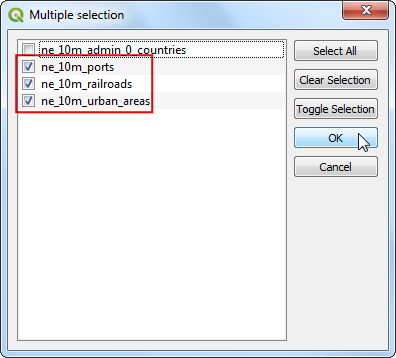
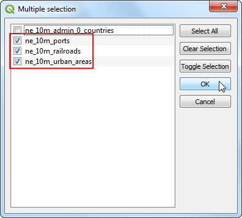

프로세싱 프레임을 이용한 일괄처리과정¶
QGIS의 **Processing Framework**는 QGIS에서 데이터 처리를 위해 토착형 그리고 제 3 자형 알고리즘을 구동할 수 있는 환경을 제공합니다. 이것은 여러개의 레이어에 대해 쉽게 알고리즘을 실행할 수 있도록 괜찮은 일괄처리 과정 인터페이스를 포함하고 있습니다. 일괄처리 과정은 수동적인 노력을 절감하고 반복적인 작업을 자동적으로 수행할 수 있도록 해주는 유용한 툴입니다.
작업 개요¶
단일 일괄처리 명령하에서 몇몇 전지구적 벡터 레이어를 사용하여 아프리카의 범위로 잘라내기를 할 것입니다.
기타 스킬¶
**Filter**를 만들어 새 레이어를 만들지 않고 레이어에서 원치 않는 피처를 제거합니다.
여러 레이어를 단일 Geopackage file로 병합합니다.
데이터 획득¶
`Natural Earth <http://naturalearthdata.com>`_에는 전 지구적 벡터레이가 있습니다. 다음의 레이어를 다운로드하십시오.
편의성을 위해 아래에서 geopackage를 포함한 레이어를 바로 다운받으실 수 있습니다.
데이터 출처: [NATURALEARTH]
과정¶
QGIS 브라우저 패널에서 다운로드 한 데이터를 저장 한 디렉토리를 찾으십시오. ``zip ‘’또는``gpkg ‘’항목을 확장하고``ne_10m_admin_0_countries ‘’레이어를 선택하십시오. 레이어를 캔버스로 드래그하십시오.

레이어 패널에 레이어가 로드 된 것을 볼 수 있습니다. 우리의 임무는 글로벌 레이어를 아프리카의 경계까지 자르는 것이므로, 먼저 해당 대륙에서만 레이어 포함 피처를 준비해야합니다. 특정 대륙에 속하는 지형지 물을 쿼리하는 데 사용할 수있는 열을 확인하기 위해 속성 테이블을 살펴 보겠습니다. ``ne_10m_admin_0_countries ‘’레이어를 마우스 오른쪽 버튼으로 클릭하고 `속성 테이블 열기`를 선택하십시오.
참고
Tip: You can also use the keyboard shortcut F6 to open the attribute table of the selected layer.

Attribute Table 창에서 가로로 스크롤하면 데이터에 ** CONTINENT **라는 속성이 포함되어 있음을 알 수 있습니다. 이 속성을 사용하여 기능을 필터링 할 수 있습니다.

속성 테이블을 닫고 기본 QGIS 창으로 돌아갑니다. ``ne_10m_admin_0_countries ‘’레이어를 마우스 오른쪽 버튼으로 클릭하고 : `Filter`를 선택하십시오.
In the Query Builder window, select the CONTINENT field and click Sample. This will populate the Values panel with the a subset of values of that attribute from features. This step is useful to get an understanding of what type of values are present in your dataset. We can see that our dataset contains a value called Africa among others.

이제 Provider specific filter expression 텍스트 상자에 표현식을 입력하십시오. ** CONTINENT ** 레이블을 클릭 한 다음 `=`버튼과 ** Africa ** 레이블을 클릭 할 수 있습니다. 또는 텍스트 상자에 다음 표현식을 입력 할 수 있습니다. 표현식을 입력 한 후 `OK`를 클릭하십시오.
"CONTINENT" = 'Africa'

이제 지도 캔버스에 아프리카 국가만 포함되어 있음을 알 수 있습니다. 레이어 이름 옆에있는 필터 아이콘은 해당 레이어에 필터가 적용되었음을 나타냅니다. 레이어에서 모든 기능을 보고 사용하려면 필터 아이콘을 클릭하고 표현식을 지울 수 있습니다. 지금은 필터를 유지하여 다른 레이어를 아프리카에 클립 할 수 있습니다.

이제 배치 프로세스를 실행하여 레이어를 클리핑 할 준비가되었습니다. QGIS Browser ‘패널에서 자연 지구 전역 레이어``ne_10m_railroads’ ‘,``ne_10m_ports’ ‘및``ne_10m_urban_areas’ ‘를 찾으십시오. : kbd :`Ctrl 키를 누른 상태에서 각 레이어를 클릭하여 선택하십시오. 선택한 후에는 캔버스로 드래그하십시오.

레이어가 로드되면 global layers를 확인할 수 있으며 그것은 모든 국가에 걸쳐 기능이 있음을 알 수 있습니다. 이제 이 클립들을 아프리카에 클립하기 위해 배치 클립 프로세스를 시작할 차례입니다. Open : menuselection :`Processing-> Toolbox`를 엽니 다.
사용 가능한 모든 알고리즘을 찾아보고 Clip tool from . You may also use the Search box를 사용하여 알고리즘을 쉽게 찾을 수도 있습니다.

Clip 알고리즘을 우측클릭하고 일괄작업으로 수행 `Execure as batch process`을 선택합니다.

Batch Processing 다이알로그에서 첫번재 탭은 입력을 결정하는 `Parameters`입니다. 테이블의 각 행은 1 개의 처리 작업을 나타냅니다. `Add row`버튼을 클릭하여 새 행을 추가하십시오. 우리의 작업에는 3 개의 레이어가 포함되므로 3 개의 행을 추가하십시오.

 

Input layer ‘열은 선택한 모든 레이어에 자동으로 채워집니다. 다음으로 입력 레이어를 클리핑 할 경계가 포함 된 레이어를 선택해야합니다. `Overlay layer 열에서 첫 번째 행에 대해 … 버튼을 클릭하고 `Select form Open Layers`을 선택하십시오.


클립 레이어는 모든 입력에 대해 동일하므로 열 머리글 `Overlay layer`를 두 번 클릭하면 모든 레이어에 동일한 레이어가 자동으로 채워집니다.

다음으로 출력을 정의해야합니다. Clipped 열의 첫 번째 행 옆에있는`…`버튼을 클릭하십시오.
출력 레이어를 원하는 디렉토리를 찾습니다. 파일 이름을``clipped_ ‘’로 입력하고`Save`를 클릭하십시오.

새로운 `Autofill settings ‘대화 상자가 나타납니다. :`Autofill mode`로``Fill with parameter values’’를 선택하십시오. `Parameter to use`로 ```Input layer ‘’를 선택하십시오. 이 설정은 입력 파일 이름을 지정된``clipped_ ‘’파일 이름과 함께 출력에 추가합니다. 모든 출력 파일의 이름이 고유하고 서로 겹쳐 쓰지 않도록하는 것이 중요합니다.

이제 일괄 처리를 시작할 준비가되었습니다. ‘Load layers on completion’를 확인하고 ‘Run’을 클릭하십시오.

The clip algorithm will run for each of the inputs and create output files as we have specified. Once the batch process finishes, click Close to return to QGIS.
참고
팁 : QGIS는 이제 사용자 인터페이스를 차단하지 않고 백그라운드에서 처리 작업을 실행할 수 있습니다. 따라서 배치 프로세스가 오래 걸리는 경우 프로세스가 백그라운드에서 계속 실행되는 동안 대화 상자를 닫고 QGIS의 다른 작업을 계속 수행 할 수 있습니다.

기본 QGIS 창으로 돌아 가면 QGIS 캔버스에 레이어가 추가 된 것을 볼 수 있습니다. 알다시피, 모든 전역 레이어는 우리가 지정한 대륙 경계에 올바르게 클리핑됩니다.

We have accomplished the task of clipping multiple layers in a batch. But QGIS3 has another handy feature that will help you save and deliver the result in a more efficient way. If you wanted to deliver the clipped layers to someone, you would zip the individual files outside of QGIS. A better option is to package the output layers in a single Geopackage. In the QGIS Browser, locate the clipped output layers. You may have to click the Refresh button to see the newly added files.

: kbd :Ctrl 키를 누른 상태에서 레이어를 선택하십시오. 캔버스로 드래그하여 QGIS에로드합니다.

Processing Toolbox`에서 : menuselection :`Database-> Package layer 도구를 찾으십시오.
‘Package layers’대화 상자에서 Input layers ‘옆에있는…`버튼을 클릭하십시오.
In the Multiple selection dialog, check the
clipped_ne_10m_ports,clipped_ne_10m_railroadsandclipped_ne_10m_urban_areaslayers. Click OK.

입력 레이어가 선택되면 ‘Destination Geopackage’옆에있는 ‘…’을 클릭하고 ‘Save To File’을 선택하십시오.
``clipped_layers``로 최종결과물의 이름을 정합니다.

패키징 프로세스를 시작하려면`Run`을 실행하십시오.
프로세스가 완료되면 클리핑 된 모든 출력 레이어를 포함하는 `QGIS Browser ‘에 새로운 지오 패키지 파일이 나타납니다. 이것은 모든 출력 레이어를 포함하는 컴퓨터의 단일 파일입니다.

If you want to give feedback or share your experience with this tutorial, please comment below. (requires GitHub account)